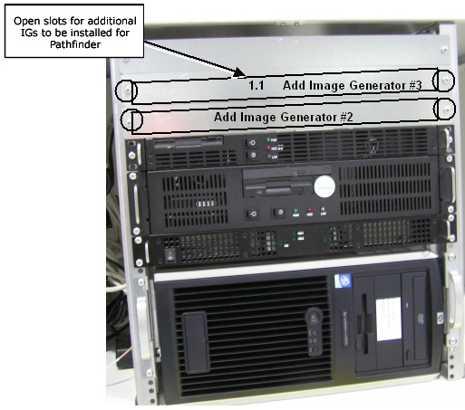
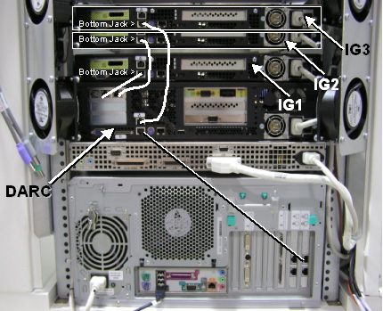

Home >
GEMS Proprietary Class: A
Direction 5134798-800, Rev# 1
Home > | GEMS Proprietary Class: A |
Table 1:
| Last Revised: | 19 May 2005 |
Install the two additional Image Generator (IG) modules, working at the front of the GRE/Xtream console. See Illustration 1.
Remove two faceplates covering the slots for Image Generator (IG) #2 and #3. Keep screws to secure the two IGs that shipped in the upgrade kit.
Insert IG #2 into the “Add Image Generator #2” slot, sliding it on the rails until flush with the GRE chassis.
Secure IG #2 using two screws from Step 1.
Insert IG #3 into the “Add Image Generator #3” slot, sliding it on the rails until flush with the GRE chassis.
Secure IG #3 using two screws from Step 1.
Move to the rear of the GRE console to continue the install of the Ethernet cables and a.c. power cords to the IGs.
Connect the Ethernet cable for “Add Image Generator #2” to the DARC as shown in Illustration 2 by the hand-drawn line. This bottom jack is “IG2eth1.”
| NOTE: | The straight lines represent the original Image Generator Ethernet cabling. |
Connect the Ethernet cable for “Add Image Generator #3” to the DARC as shown in Illustration 2 by the hand-drawn line. This bottom jack is “IG3eth1.”
Connect a.c. power cable (pre-wired in GRE chassis) to the added Image Generator #1’s a.c. input receptacle.
Connect a.c. power cable (pre-wired in GRE chassis) to the added Image Generator #2’s a.c. input receptacle.
Re-connect all other cables to DARC (since it was removed to install its DVD drive).
Illustration 1: Prepare to Add Two IGs

Illustration 2: DARC/IG/PC Cabling


|